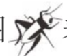
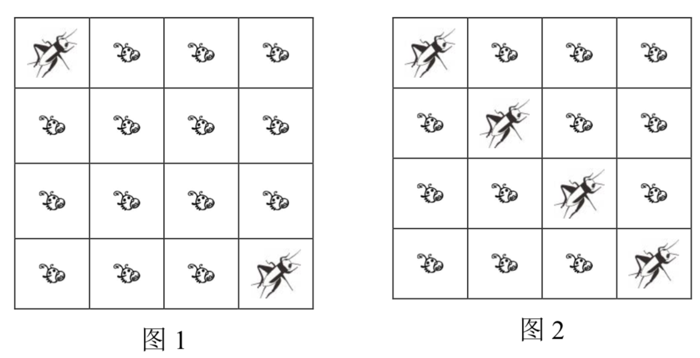
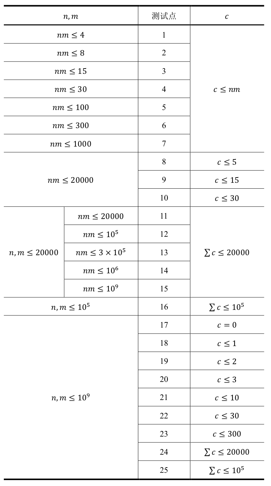

跳蚤国王和蛐蛐国王在玩一个游戏。
他们在一个$𝑛$行$𝑚$列的网格上排兵布阵。其中的$𝑐$个格子中$(0 ≤ 𝑐 ≤𝑛𝑚)$，每个格子有一只蛐蛐，其余的格子中，每个格子有一只跳蚤。
我们称占据的格子有公共边的两只跳蚤是相邻的。
我们称两只跳蚤是连通的，当且仅当这两只跳蚤相邻，或存在另一只跳蚤与这两只跳蚤都连通。
现在，蛐蛐国王希望，将某些（0个，1个或多个）跳蚤替换成蛐蛐，使得在此之后存在至少两只跳蚤不连通。
例如：我们用图表示一只跳蚤，用图表示一只蛐蛐，那么图1描述了一个$𝑛=4,𝑚=4,𝑐=2$的情况。
这种情况下蛐蛐国王可以通过将第2行第2列，和第3行第3列的两只跳蚤替换为蛐蛐，从而达成他的希望，如图2所示。并且，不存在更优的方案，但是可能存在其他替换2只跳蚤的方案。

你需要首先判断蛐蛐国王的希望能否被达成。如果能够达成，你还需要最小化被替换的跳蚤的个数。
第一行只有一个整数$𝑇$，表示数据的组数。保证$1 ≤ 𝑇 ≤ 20$。
接下来依次输入$𝑇$组数据，每组数据的第一行包含三个整数$𝑛,𝑚,𝑐$。保证$1 ≤ 𝑛,𝑚 ≤ 10^9，0 ≤ 𝑐 ≤ min (𝑛𝑚,10^5)$。
接下来$𝑐$行，每行包含两个整数$𝑥,𝑦$，表示第$𝑥$行，第$𝑦$列的格子被一个蛐蛐占据$(1 ≤ 𝑥 ≤ 𝑛, 1 ≤ 𝑦 ≤ 𝑚)$。每一组数据当中，同一个蛐蛐不会被多次描述。
同一行相邻的整数之间由一个空格隔开。
对于每一组数据依次输出一行答案。
如果这组数据中，蛐蛐国王的希望不能被达成，输出−1。否则，输出被替换的跳蚤的个数的最小值。
4 4 4 2 1 1 4 4 2 3 1 1 2 2 2 2 1 1 2 2 1 1 0
2 1 0 -1
【样例1说明】
第一组数据就是问题描述中的例子。
对于第二组数据，可以将第2行第2列的一只跳蚤替换为蛐蛐，从而使得存在两只跳蚤不连通，并且不存在更优的方案。
对于第三组数据，最初已经存在两只跳蚤不连通，故不需要再进行替换。
对于第四组数据，由于最多只有一只跳蚤，所以无论如何替换都不能存在两只跳蚤不连通。
【子任务】
对于全部的测试点，保证$1 ≤ 𝑇 ≤ 20$。我们记$\sum𝑐$为某个测试点中，其$𝑇$组输入数据的所有$𝑐$的总和。对于所有的测试点，$\sum 𝑐 ≤ 10^5$。
对于全部的数据，满足$1≤𝑛,𝑚≤10^9,0≤𝑐≤𝑛𝑚,1≤𝑥≤𝑛,1≤𝑦≤𝑚$。
每个测试点的详细数据范围见下表。表中的$𝑛,𝑚,𝑐$均是对于单个输入数据（而非测试点）而言的，也就是说同一个测试点下的$𝑇$组数据均满足限制条件；而$\sum𝑐$是对于单个测试点而言的。

 Comet OJ
Comet OJ